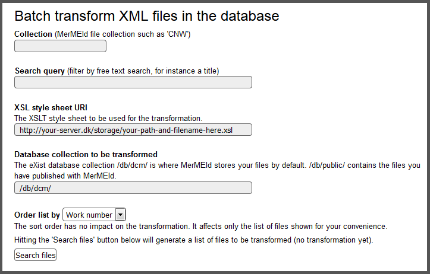

Batch transforming XML files in the database
Sometimes you need to make the same changes to many or all of your MEI documents.
Typical changes are text replacements (if, for instance, your project changes its
name or address), but also more complex, structural changes are possible. Using an
XSL transformation for such tasks often is more efficient than editing all the
documents by hand. Instead of downloading all of your files, transforming them
locally on your computer, and upload them back to the server, MerMEId offers a
script to do such a transformation directly on the server.
Please note, however, that due to software limitations transformations cannot make
any changes to the documents' root element (that is, <mei>),
such as changing the meiversion attribute. To migrate your data to newer
MEI versions, therefore, you will need to download your data, transform them locally
and upload them to the new database.
- Warning! Transforming your documents directly on the server is an irreversible
process.
If your transformation does not work as expected, your data may be completely and permanently damaged. Make sure to test your transformation thoroughly and to save a backup copy of your data somewhere else before running the transformation.
For safety reasons, the batch transformation service is disabled by default. Ask your system administrator to enable it by editing the file /db/mermeid/tools/batch_transform.xq in the eXist database.
Prior to using the script, an XSLT style sheet making the desired changes must be placed somewhere where your server has access to it.
The script is located in the 'tools' folder in your eXist database: batch_transform_settings.xq.
The server may prompt you for an administrator password in order to give you access to the script. You should see the following form. It includes basic instructions and suggests default settings in some of the fields:

Fill in the form to define which files to select. The default location of the XSLT style sheets (http://[your-server]/storage/tools/batch_xsl/) is referring to the collection /db/mermeid/tools/batch_xsl/ in your eXist database, but your style sheet may also be located outside of the database or on some other server. Click the 'Search files' button to get a list of files matching the search criteria. Possibly not all files will actually be changed — that depends on your XSL transformation. The list only indicates the files that the script will attempt to transform.
Hit the 'Transform' button to run the transformation.
- If you are transforming many files, the connection may time out before the
process is completed. This does not necessarily mean that the process stopped;
it may continue to run in the background on your server. Therefore, you may
experience the server being irresponsive for some time after a timeout.
Changing your browser's HTTP timeout settings may help avoiding a connection timeout.
After the transformation process — if the connection did not time out — a result page will list the files changed and those that were unaffected by the transformation.